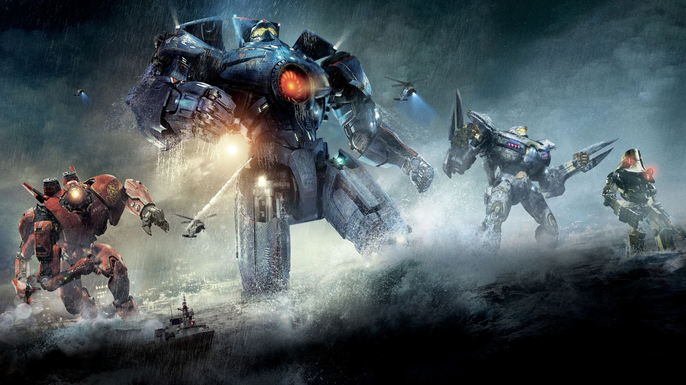
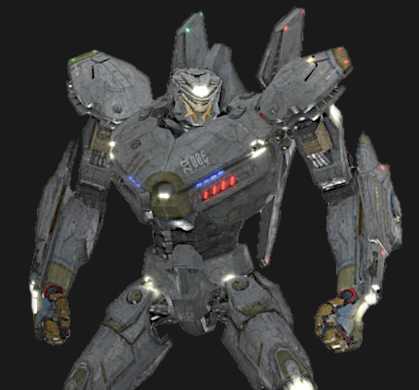
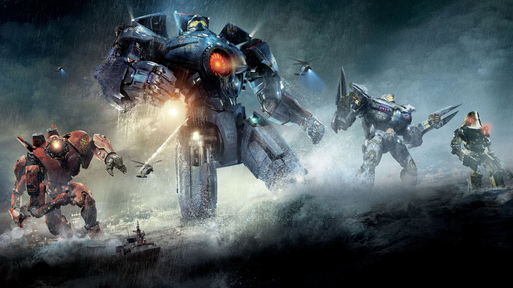

A Pacific Rim világa
A Pacific Rim egy sci-fi világ, ahol az emberiség óriási robotokkal, Jaegerekkel harcol a dimenziókapukon át érkező hatalmas szörnyek, a Kaijuk ellen.
Híres kaijuk
Gpsy Danger

Striker Eureka
Leatherback

A Pacific Rim egy sci-fi világ, ahol az emberiség óriási robotokkal, Jaegerekkel harcol a dimenziókapukon át érkező hatalmas szörnyek, a Kaijuk ellen.
